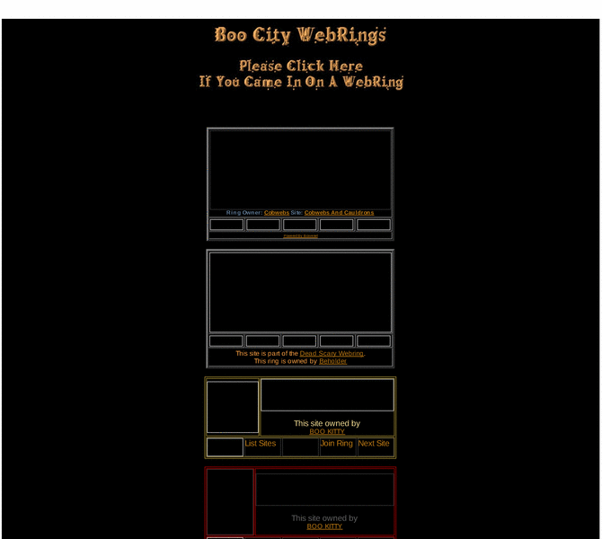

Previewing: Boo City Graffix Previewing: Boo City Graffix 
Use the left/right red arrow controls to navigate through this ring - Click the preview image to visit the member site.

Horror and Halloween Graphics.
Boo City Graffix owned by:
 boo_kitty boo_kitty
A member of the original webring since 10/05/2010.
|
|